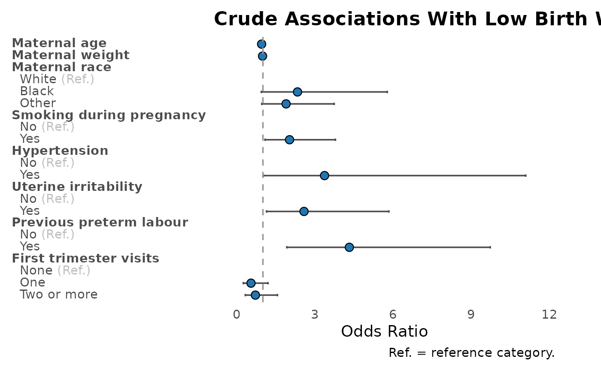
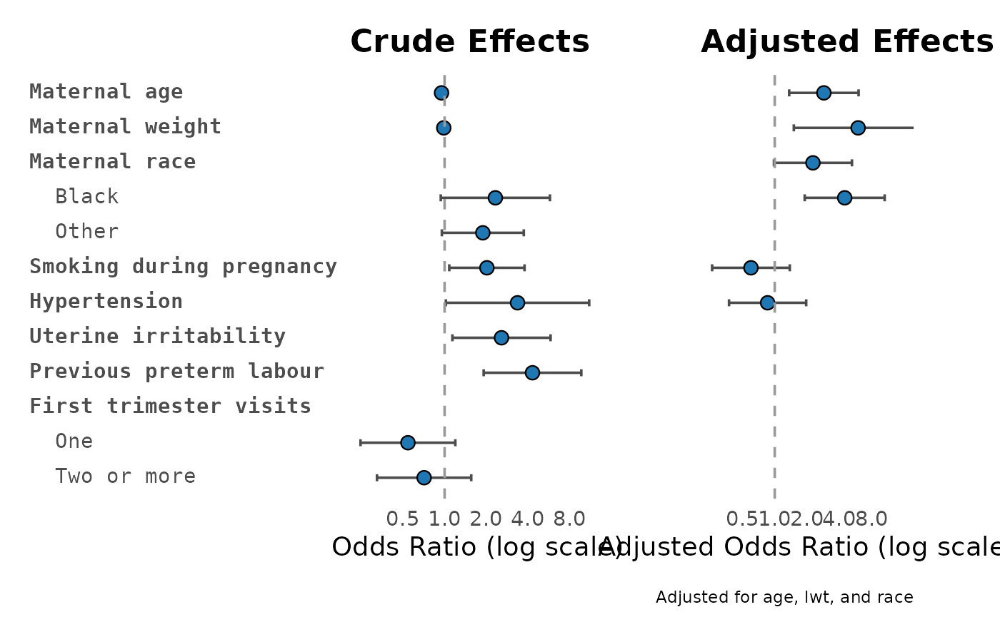
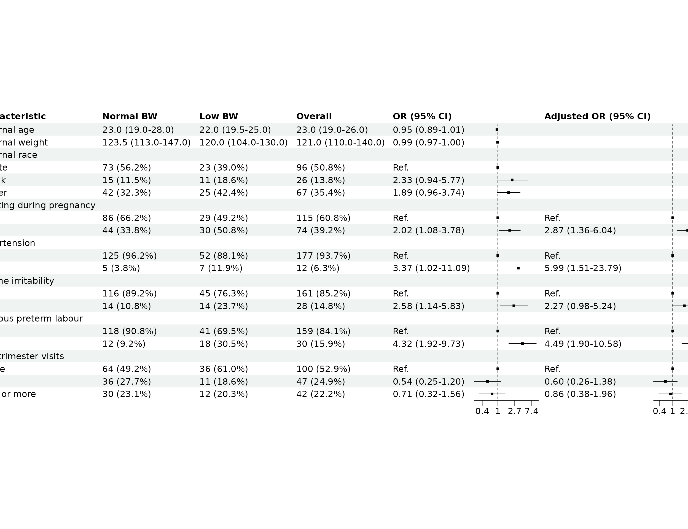

Visualise Regression Results
Regression tables are the evidence. Plots are the vibe check. Use
plot_reg(), plot_reg_combine(),
forest_df(), and forest_reg() to make the
results easier to scan.
library(gtregression)
library(dplyr)
data("data_birthwt", package = "gtregression")
birthwt_data <- data_birthwt |>
mutate(
race = factor(race, levels = c(1, 2, 3),
labels = c("White", "Black", "Other")),
smoke = factor(smoke, levels = c(0, 1), labels = c("No", "Yes")),
ht = factor(ht, levels = c(0, 1), labels = c("No", "Yes")),
ui = factor(ui, levels = c(0, 1), labels = c("No", "Yes")),
low = factor(low, levels = c(0, 1), labels = c("Normal BW", "Low BW")),
ptl_cat = factor(ifelse(ptl > 0, "Yes", "No"), levels = c("No", "Yes")),
ftv_cat = factor(case_when(
ftv == 0 ~ "None",
ftv == 1 ~ "One",
ftv >= 2 ~ "Two or more"
), levels = c("None", "One", "Two or more"))
)
birthwt_exposures <- c(
"age", "lwt", "race", "smoke", "ht", "ui", "ptl_cat", "ftv_cat"
)
birthwt_desc <- descriptive_table(
birthwt_data,
exposures = birthwt_exposures,
by = "low",
show_overall = "last"
)
birthwt_uni <- uni_reg(
birthwt_data,
outcome = "low",
exposures = birthwt_exposures,
approach = "logit"
)
birthwt_multi <- multi_reg(
birthwt_data,
outcome = "low",
exposures = c("smoke", "ht", "ui", "ptl_cat", "ftv_cat"),
adjust_for = c("age", "lwt", "race"),
approach = "logit"
)One Regression Plot
plot_reg(
birthwt_multi,
title = "Adjusted Regression for Low Birth Weight"
)
Compare Crude and Adjusted Effects
plot_reg_combine(
tbl_uni = birthwt_uni,
tbl_multi = birthwt_multi,
title_uni = "Crude Effects",
title_multi = "Adjusted Effects"
)
Publication-Style Forest Table
forest_df() prepares the data. forest_reg()
draws the forest table.
forest_data <- forest_df(
uni = birthwt_uni,
multi = birthwt_multi,
desc = birthwt_desc
)
forest_reg(forest_data, quiet = TRUE)
What To Inspect
-
plot_reg()returns aggplot. -
plot_reg_combine()returns a combinedggplot. -
forest_df()returns the plotting data frame. -
forest_reg()returnsplot,data,input_data, andmeta.